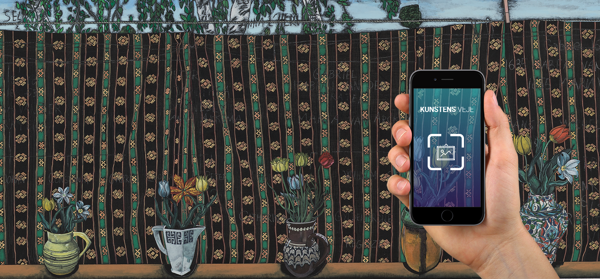

Kunst med mobilen
Som et særligt tiltag for både elever og besøgende på Marselisborg Gymnasium har Ny Carlsbergfondet fået udarbejdet et interaktivt værktøj i form af en mobilapp, som lader brugerne opleve værkerne på helt nye måder.
Med mobilen i hånden guider app’en beskueren rundt på forskellige ruter fra kunstværk til kunstværk og inviterer til at udforske værkerne på nye måder og fra forskellige perspektiver.
Gennem audioguides, film og 360-graders video inviteres eleverne indenfor i kunstnernes atelierer og får indblik i kunstnernes arbejdsmetoder og inspirationskilder. Med avanceret kamerateknologi udfordrer app’en desuden beskueren til at finde og reflektere over detaljer i værkerne, ligesom kunsten åbnes, og tankerne sættes i gang, når der eksperimenteres med værkernes udtryk gennem forskellige filtre, spejlvendinger af værkerne eller varierende lydtapeter.
”Det er virkelig interessant at gå og kigge på værkerne. De skaber liv på skolen og giver anledning til samtaler. Værkerne bliver også en del af skolens udtryk. Værkerne af Jesper Christiansen er helt specielle, fordi de også fortæller noget om gymnasiets historie. Det er spændende, at gymnasiet på den måde bliver en del af kunsthistorien.” Christina Rønne Sørensen, elev på Marselisborg Gymnasium
Du finder app’en Kunstens veje i App Store (iOS) eller Google Play (Android).